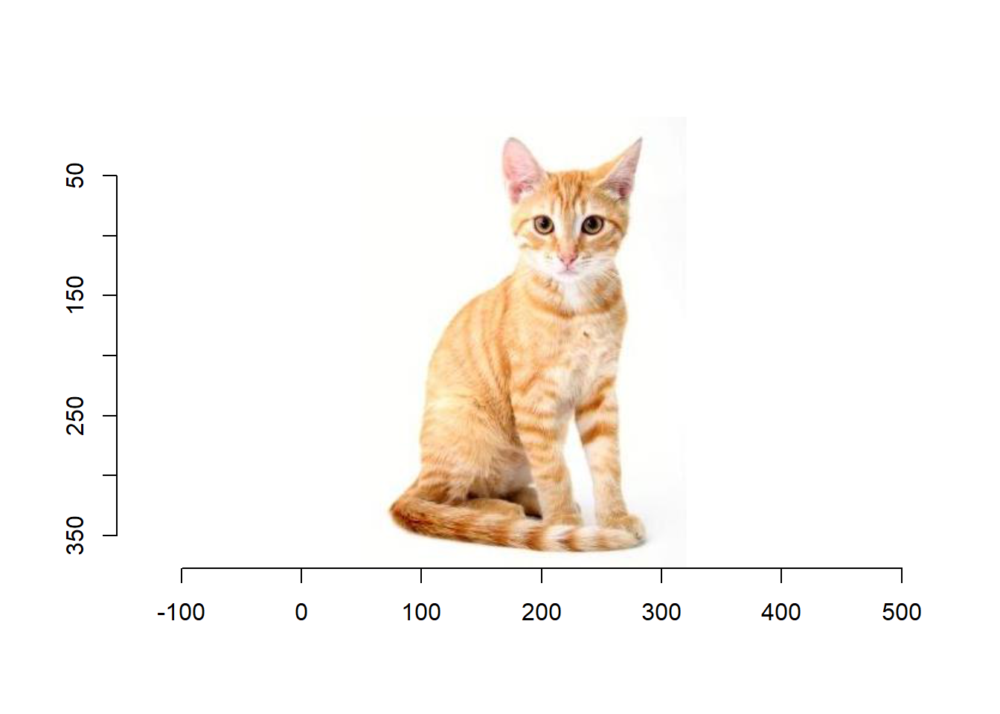
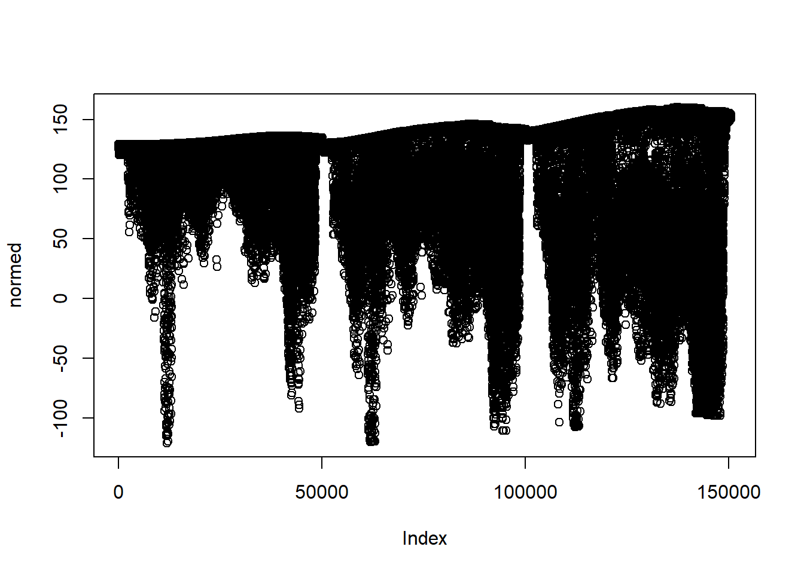

Neural Network
Introduction
## Instal tensorflow
# devtools::install_github("rstudio/reticulate")
# devtools::install_github("rstudio/tfestimators")
# library(tfestimators)
# install_tensorflow()
#
# SEE more information / exemple : https://tensorflow.rstudio.com/blog/keras-fraud-autoencoder.htmlThese algorithms work on complex neural structures that can abstract higher level of information from a huge dataset. They are computationally heavy and hard to train. We provide a deep architecture network and image recognition (convolutional nets) : - Deep Boltzmann Machine DBM - Deep Belief Network DBN - Convolutional Neural Network CNN - Stacked auto Encoders - RELU : fonction de lien activation fonction so much better than sigmoid (help with the vanishing gradient problem ???)
What is deep neural netwwork :
- Deep Neural network consists of more hidden layers - Each Input will be connected to the hidden layer and the NN will decide the connections.
Pratique car : - We no longer need to make any assumptions about our data; any type of data works in neural networks (categorical and numerical). - They are scalable techniques, can take in billions of data points,and can capture a very high level of abstraction. - Utilise le Learning and updating. Essai erreur. pour amélioréer les resultats
Neural Networks Basis
Artificial neural networks have three main components to set up :
- 1. Architecture: Number of layers, weights matrix, bias, connections,… - 2. Rules: Refer to the mechanism of how the neurons behave in response to signals from each other. - 3. Learning rule: The way in which the neural network’s weights change with time.
Perceptron : Basic unit of ANN.
- Takes multiple input and produce binary output.
- binary classification algorithm basé sur des prédicteurs linéaire et une fonction de poids $f(x) = 1 Si wx+b >0$
 Single perceptron algorithm : - 1. Initialize de weights to some feasible values - 2. For each data point in a training set, do step 3 and 4. - 3. Calcul the output with previous step weights $$ y_j(t) = f[w(t)x_j] = f[w_0(t)x_{j,0} + w_1(t)x_{j,1} + w_2(t)x_{j,2}+ … + w_n(t)x_j,n]
- 4. Update the weight : $w_i(t+1) = w_i(t)+(d_j-y_j(t))x_{j,i}$ for all feature $0<i<n$
- 5. Stop when reach stopping criteria
- All points in training set are exhausted
- a preset number of iteration
- iteration error ($= \frac{1}{s} \sum |d_j - y_j(t)|$) is less than threshold error.
Sigmoid Neuron
Sigmoid Neuron ($ S(t) = ) allow a continuous output. similar to logistic curve. Tout comme le perceptron, le sigmoid neuron has weight for each input et un biais global.

simple neural network
Neural Network Architecture

artificial neural network
Artificial neural networt expand the simple peceptron to a multi layer perceptron (MLP). THis is a neural network architeture that can deal with non linear separation as output.
Hidden layers : predicts connection between inputs automatically. Doesn’t have any direct input. Finding the hidden layer design and number is notstraightforward. Il existe plusieurs disign pour les hidden layer, par exemple : - Feedforward Neural Networks (FFNN): each input layer is in one direction. This network makes sure that there are no loops within the neural network. (le plus general) - Specialization versus Generalization: If you have too many hidden layers/complicated architecture, the neural network tend to be very specialized (so overfits). If you use simple architecture that the model will be very generalized and would not fit the data properly.
Feed-Forward back propagation
One of the most popular learning methodologies in neural networks. It can by use to train artificial neural network. Method works on the gradient descent principle so the neuron function should be defferential.

artificial neural network
We will give amathematical representation of error correction when the sigmoid function is used as the activation function. This algorithm will be correcting for error in each iteration and coverage to a point where it has no more reducible error : - 1. Feed-forward the network with input and get the output. - 2. Backward propagation of output, to calculate delta at each neuron (error). - 3. Multiply the delta and input activation function to get the gradient of weight. - 4. Update the weight by subtracting a ratio from the gradient of the weight.
To update the weight wij using gradient descent, you must choose a learning rate
Example : purchase prediction : NN classification
#data preparation
Data_Purchase_Prediction <-read.csv("C:/Users/007/Desktop/Data science with R/R/Dataset/Chapter 6/PurchasePredictionDataset.csv",header=TRUE)
Data_Purchase_Prediction$choice <-ifelse(Data_Purchase_Prediction$ProductChoice ==1,1, ifelse(Data_Purchase_Prediction$ProductChoice ==3,0,999))
Data_Neural_Net <-Data_Purchase_Prediction[Data_Purchase_Prediction$choice%in%c("0","1"),]
#Remove Missing Values
Data_Neural_Net <-na.omit(Data_Neural_Net)
rownames(Data_Neural_Net) <-NULL
# Usually scaling the continuous variables in the intervals [0,1] or [-1,1] tends to give better results. Convert the categorical variables into binary variables.
#Transforming the continuous variables
cont <-Data_Neural_Net[,c("PurchaseTenure","CustomerAge","MembershipPoints","IncomeClass")]
maxs <-apply(cont, 2, max)
mins <-apply(cont, 2, min)
scaled_cont <-as.data.frame(scale(cont, center = mins, scale = maxs -mins))
#The dependent variable
dep <-factor(Data_Neural_Net$choice)
# Multifactor data to binaries variables
Data_Neural_Net$ModeOfPayment <-factor(Data_Neural_Net$ModeOfPayment)
flags_ModeOfPayment =data.frame(Reduce(cbind,lapply(levels(Data_Neural_Net$ModeOfPayment), function(x){(Data_Neural_Net$ModeOfPayment ==x)*1})))
names(flags_ModeOfPayment) =levels(Data_Neural_Net$ModeOfPayment)
Data_Neural_Net$CustomerPropensity <-factor(Data_Neural_Net$CustomerPropensity)
flags_CustomerPropensity =data.frame(Reduce(cbind,lapply(levels(Data_Neural_Net$CustomerPropensity), function(x){(Data_Neural_Net$CustomerPropensity ==x)*1})))
names(flags_CustomerPropensity) =levels(Data_Neural_Net$CustomerPropensity)
cate <-cbind(flags_ModeOfPayment,flags_CustomerPropensity)
#Combine all data into single modeling data
Dataset <-cbind(dep,scaled_cont,cate);
#Divide the data into train and test
set.seed(917);
index <-sample(1:nrow(Dataset),round(0.7*nrow(Dataset)))
train <-Dataset[index,]
test <-Dataset[-index,]
##MODELING
library(nnet)
i <-names(train)
form <-as.formula(paste("dep ~", paste(i[!i %in% "dep"], collapse =" + ")))
nn <-nnet.formula(form,size=10,data=train)## # weights: 181
## initial value 151866.965727
## iter 10 value 108709.305804
## iter 20 value 107666.702615
## iter 30 value 107382.819447
## iter 40 value 107267.937386
## iter 50 value 107203.589847
## iter 60 value 107138.952084
## iter 70 value 107084.361878
## iter 80 value 107037.998279
## iter 90 value 107003.328743
## iter 100 value 106970.152142
## final value 106970.152142
## stopped after 100 iterations# Use 10 neuron in one hidden layer
predict_class <-predict(nn, newdata=test, type="class")
table(test$dep,predict_class)## predict_class
## 0 1
## 0 28776 13863
## 1 11964 19534sum(diag(table(test$dep,predict_class))/nrow(test))## [1] 0.6516314# misc rate : 65.1% qui est 1% de plus que logistic reg
# neural net ameliore prediction sur 0 mais détérior sur 1
library(NeuralNetTools)## Warning: package 'NeuralNetTools' was built under R version 3.3.3plotnet(nn)
# Plot the importance
olden(nn)
garson(nn)
Other information
ain step : - define model structure - initialize model parameters - loop - calculate current loss (forward propagation) - calculate current gradient (backward propagation) -update parameter (gradient descent)
Classification et regression Size parameter specifying how many nodes you want in the inner layer of the network
Type of neural network function : - Perceptron - Back propagation - Hopfield Network - Radia Basis Function Network (RBFN) - RELU
Deep Learning
Deep learning consists of advanced algorithms having multiple layers, composed of multiple linear and non-linear transformations
There are multiple deep learning architectures : - automatic speech recognition, - NLP, - audio recognition - Deep neural network - Convolution deep neural network (image recognition :2 dimentional data) - deep belief (image et signal processing) - recurrent neural network (time series data) - recursive Neural network (langugage processing)
In general, adding more layers and neurons per layer increases the specialization of neural network to train data and decreases the performance on test data: Overfitting and computational cost.
However R is not yet developed enough tools to run various deep learning algorithms. Another reason for that is deep learning is so resource intensive that models can be trained only on large clusters and not on workstations.
Example of deep learning : Classification
# continuous variable are scaled and categorical varibale converted into binary variables
#install.packages("C:/Users/007/Desktop/Data science with R/R/darch_0.12.0.tar.gz" , repos = NULL, type="source")
library(darch)
library(mlbench)
library(RANN)
#Print the model formula
form## dep ~ PurchaseTenure + CustomerAge + MembershipPoints + IncomeClass +
## BankTransfer + Cash + CashPoints + CreditCard + DebitCard +
## MoneyWallet + Voucher + High + Low + Medium + Unknown + VeryHigh########### NOT Run TO long !!######
#Apply the model using deep neural net with
# deep_net <- darch(form, train,
# preProc.params = list("method" = c("knnImpute")),
# layers = c(0,10,30,10,0),
# darch.batchSize = 1,
# darch.returnBestModel.validationErrorFactor = 1,
# darch.fineTuneFunction = "rpropagation",
# darch.unitFunction = c("tanhUnit", "tanhUnit","tanhUnit","softmaxUnit"),
# darch.numEpochs = 15,
# bootstrap = T,
# bootstrap.num = 500)
# deep_net <-darch(form,train,
# preProc.params =list(method =c("center", "scale")),
# layers =c(0,10,30,10,0),
# darch.unitFunction =c("sigmoidUnit", "tanhUnit","tanhUnit","softmaxUnit"),
# darch.fineTuneFunction ="minimizeClassifier",
# darch.numEpochs =15,
# cg.length =3, cg.switchLayers =5)
#
library(NeuralNetTools)
#plot(deep_net,"net")
#result <-darchTest(deep_net, newdata = test)
#resultExample : Imagine prediction : NN classification
# install.packages("drat", repos="https://cran.rstudio.com")
# drat:::addRepo("dmlc")
# cran <- getOption("repos")
# cran["dmlc"] <- "https://apache-mxnet.s3-accelerate.dualstack.amazonaws.com/R/CRAN/"
# options(repos = cran)
# install.packages("mxnet")
# install.packages("https://github.com/jeremiedb/mxnet_winbin/raw/master/mxnet.zip", repos = NULL)
#Please refer https://github.com/dahtah/imager
##install.packages("devtools")
#devtools::install_github("dahtah/imager")
library(mxnet)## Warning: package 'mxnet' was built under R version 3.3.3#install imager for loading images
library(imager)## Warning: package 'imager' was built under R version 3.3.3## Loading required package: plyr## Warning: package 'plyr' was built under R version 3.3.3## Loading required package: magrittr## Warning: package 'magrittr' was built under R version 3.3.3##
## Attaching package: 'magrittr'## The following object is masked from 'package:rgr':
##
## inset##
## Attaching package: 'imager'## The following object is masked from 'package:magrittr':
##
## add## The following object is masked from 'package:plyr':
##
## liply## The following object is masked from 'package:randomForest':
##
## grow## The following object is masked from 'package:partykit':
##
## width## The following object is masked from 'package:grid':
##
## depth## The following object is masked from 'package:gmodels':
##
## ci## The following objects are masked from 'package:stats':
##
## convolve, spectrum## The following object is masked from 'package:graphics':
##
## frame## The following object is masked from 'package:base':
##
## save.imagelibrary(drat)## Warning: package 'drat' was built under R version 3.3.3#load the pre-trained model
download.file('http://data.dmlc.ml/data/Inception.zip', destfile = 'Inception.zip')
unzip("Inception.zip")
model <- mx.model.load("Inception/Inception_BN", iteration=39)
#We also need to load in the mean image, which is used for preprocessing using mx.nd.load.
mean.img = as.array(mx.nd.load("Inception/mean_224.nd")[["mean_img"]])
#Load and plot the image: (Default parrot image)
#im <- load.image(system.file("extdata/parrots.png", package="imager"))
#im <-load.image("Images/russia-volcano.jpg")
im = load.image("C:/Users/007/Desktop/Data science with R/R/Inception/fibrosarcome-chat.jpg")
plot(im)
preproc.image <-function(im, mean.image) {
# crop the image
shape <-dim(im)
short.edge <-min(shape[1:2])
xx <-floor((shape[1] -short.edge) /2)
yy <-floor((shape[2] -short.edge) /2)
cropped <-crop.borders(im, xx, yy)
# resize to 224 x 224, needed by input of the model.
resized <-resize(cropped, 224, 224)
# convert to array (x, y, channel)
arr <-as.array(resized) *255
dim(arr) <-c(224, 224, 3)
# subtract the mean
normed <-arr -mean.img
# Reshape to format needed by mxnet (width, height, channel, num)
dim(normed) <-c(224, 224, 3, 1)
return(normed)
}
#Now pass our image to pre-process
normed <-preproc.image(im, mean.img)
plot(normed)
prob <- predict(model, X=normed)
#We can extract the top-5 class index.
max.idx <- order(prob[,1], decreasing = TRUE)[1:5]
max.idx## [1] 283 286 282 288 284synsets <-readLines("Inception/synset.txt")
#And let us print the corresponding lines:
print(paste0("Predicted Top-classes: ", synsets[as.numeric(max.idx)]))## [1] "Predicted Top-classes: n02123159 tiger cat"
## [2] "Predicted Top-classes: n02124075 Egyptian cat"
## [3] "Predicted Top-classes: n02123045 tabby, tabby cat"
## [4] "Predicted Top-classes: n02127052 lynx, catamount"
## [5] "Predicted Top-classes: n02123394 Persian cat"